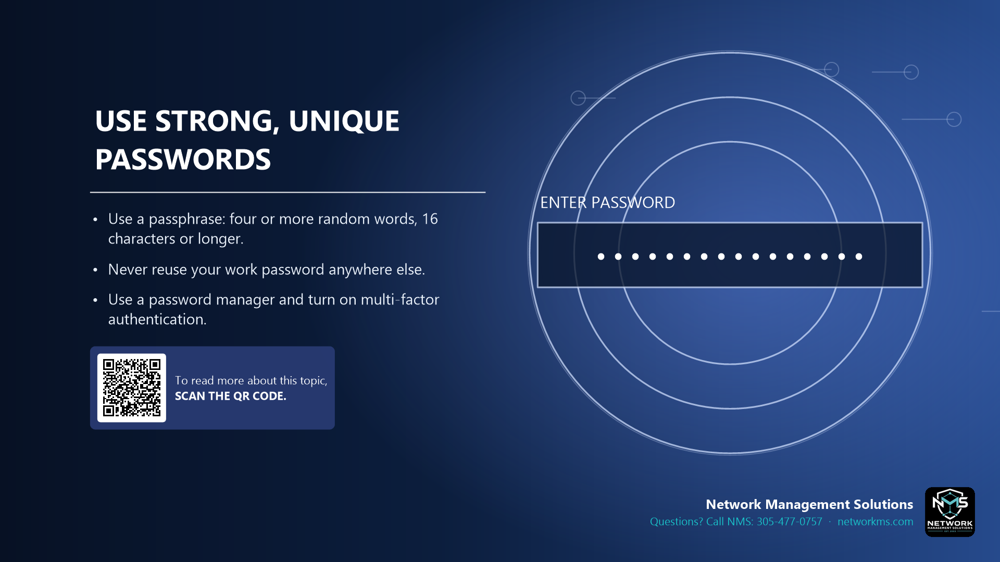

Use strong, unique passwords

- Use a passphrase: four or more random words, 16 characters or longer.
- Never reuse your work password anywhere else.
- Use a password manager and turn on multi-factor authentication.
Long passphrases are easier to remember and harder to crack than short complex passwords. Example of the idea: four unrelated words with a number or symbol.
When a website is hacked, criminals try the same email and password on other sites. A unique password for each account stops that.
A password manager remembers them for you. Multi-factor authentication adds a second lock in case a password leaks.
Not sure about an email, text or call? Call NMS before you click: 305-477-0757 · networkms.com